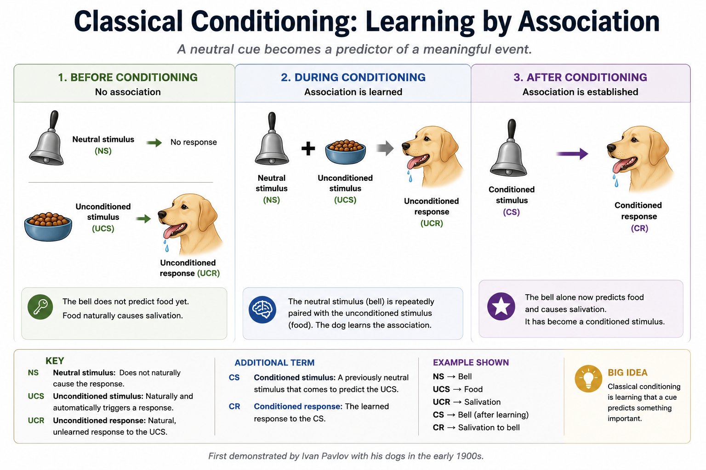
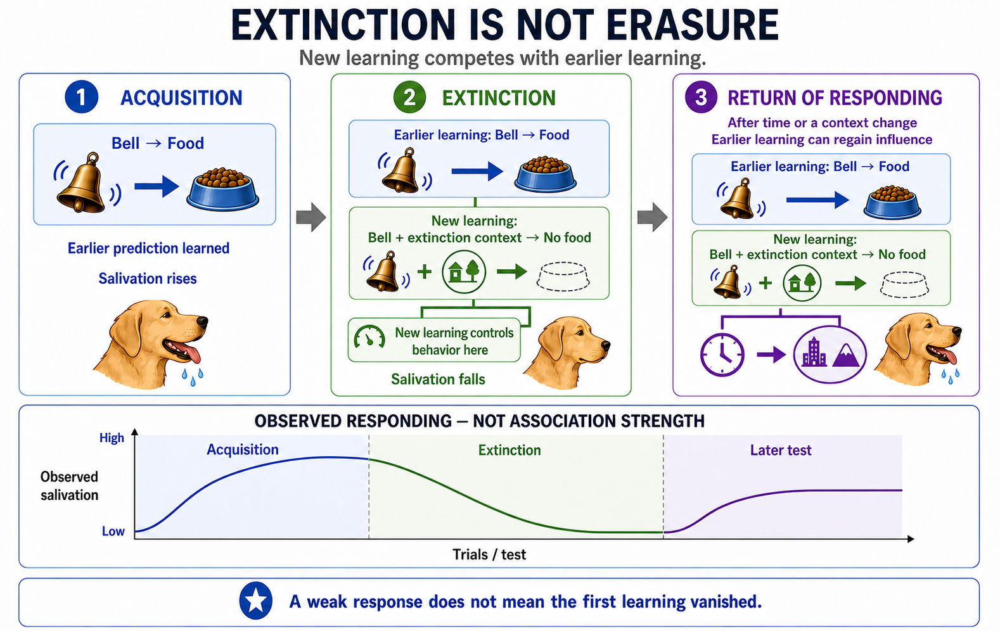
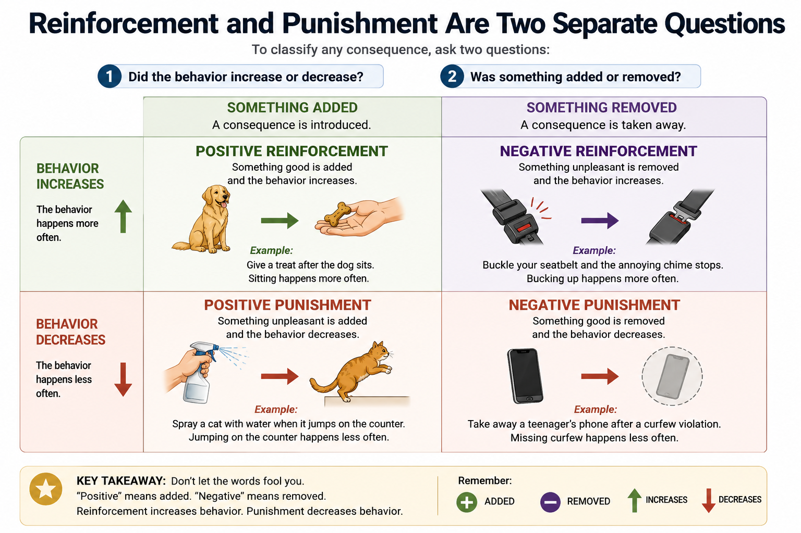
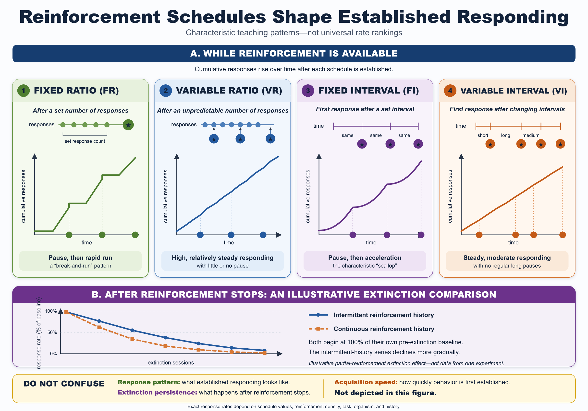
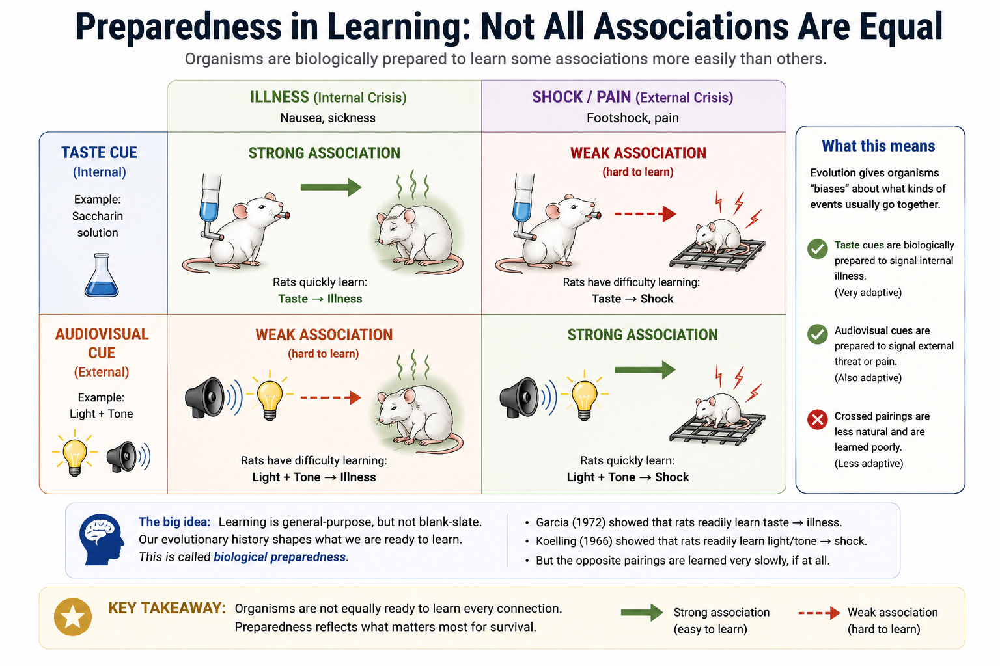
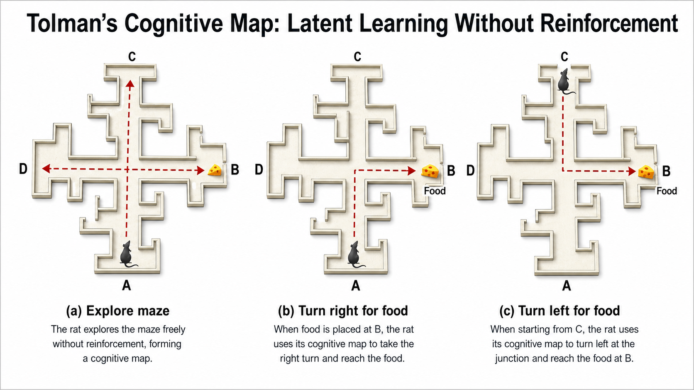
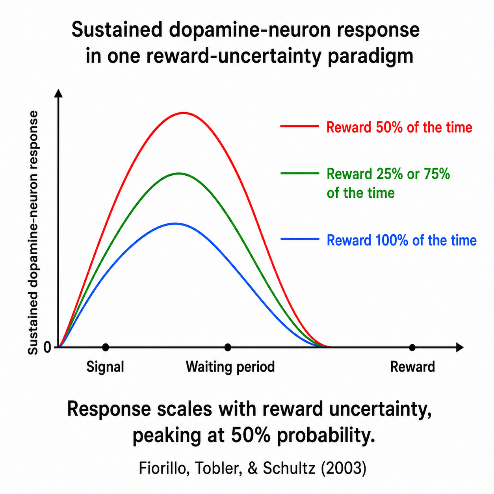
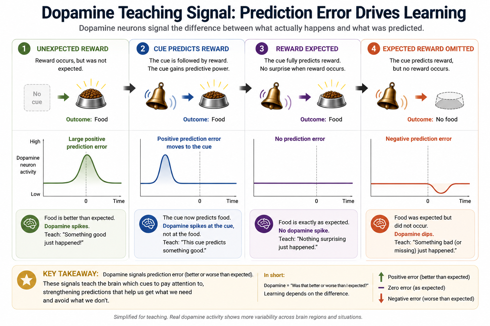

Learning
"Rewarding a behavior is basically the same as bribing someone, and it will eventually backfire."
Plenty of people are suspicious of reinforcement on exactly these grounds — give a kid candy for cleaning their room and you have not taught them to value tidiness, you have taught them to expect candy, and the whole arrangement seems destined to collapse the moment the candy stops. There is a real phenomenon buried in that worry — extrinsic rewards genuinely can undermine intrinsic motivation under specific, well-documented conditions (more on that in Section 4) — but the broader claim, that reinforcement is a kind of cheap manipulation standing apart from how organisms "really" learn, gets the science backward. Reinforcement is not a trick humans invented to manipulate each other or their pets. It is one of the oldest, most general-purpose learning mechanisms built by natural selection, present in some form across an enormous range of species, because tracking which behaviors and which stimuli predict good and bad outcomes is about as basic a survival problem as exists. A nervous system that could not learn "this behavior got me food" or "this sound means danger is coming" would be a nervous system perpetually starting from scratch.
This chapter is built around two of the most thoroughly studied learning processes in the field's history — classical conditioning, in which an organism learns that one stimulus predicts another, and operant conditioning, in which an organism learns that its own behavior predicts a consequence — plus the forms of learning that do not reduce neatly to either one: learning by watching others, learning a layout of the world without any reward at all, and the dopamine-driven anticipation system that makes reinforcement feel the way it feels from the inside. None of this is bribery. It is the machinery underneath nearly every habit, fear, preference, and skill you have, operating continuously whether or not anyone is deliberately trying to train you.
Where This Fits
Chapter 6 closed by framing sleep as the model's offline maintenance window — the brain taken off duty to consolidate, restore, and clear out. This chapter is about the model getting updated while online, and it opens on the question that organizes everything that follows: why is unlearning harder than learning? In the master loop this book keeps returning to — partial input, prediction, action, prediction error, then updating or defense — Learning is that last step made visible: the machinery by which experience actually revises what an organism expects and does, rather than just registering that it was wrong. That update runs on the same dopamine system that Chapter 5, two chapters back, described being hijacked by stimulant drugs; this chapter opens that system back up and explains what it is doing the rest of the time — driving the ordinary, everyday process of learning what predicts what, and what behaviors pay off. Going forward, the conditioning principles introduced here are the direct ancestors of Chapter 13's behavioral therapies (extinction is, clinically, exposure therapy by another name), and the observational-learning content sets up Chapter 11's account of how social influence and aggression can spread through a population without any direct reinforcement of the people doing the learning. The deeper problem running through the chapter is this: experience updates the organism's model of the world, but those updates are often less permanent than they feel — which is why unlearning can be harder than learning.
Learning Objectives
- Distinguish classical conditioning from operant conditioning by identifying what is actually being associated with what in a given scenario (APA IPI Theme 2: psychology explains general principles that apply across many situations).
- Diagram a classical conditioning scenario using UCS, UCR, CS, and CR, and explain acquisition, extinction, spontaneous recovery, generalization, and discrimination using a concrete example.
- Differentiate the four reinforcement/punishment categories (positive reinforcement, negative reinforcement, positive punishment, negative punishment) and correctly classify a novel scenario into one of the four.
- Explain how schedules of reinforcement and shaping are used to build and maintain behavior, and predict which schedule produces the most resistance to extinction.
- Apply the concept of biological preparedness to explain why some associations (like taste and illness) are learned far more readily than others, connecting this to the evolutionary perspective introduced in Chapter 1 (APA IPI Theme 3: biological, psychological, and social factors interact).
- Evaluate observational learning and latent learning as evidence that organisms learn things conditioning alone does not predict, using Bandura's and Tolman's classic experiments as case studies (APA IPI Theme 1: psychological science relies on evidence and revises itself as it accumulates).
- Explain why dopamine functions primarily as an anticipation signal rather than a pleasure signal, and use that distinction to evaluate a real-world claim about reward, motivation, or addiction.
Section 1: Classical Conditioning — Learning What Predicts What
Ivan Pavlov did not set out to discover one of psychology's foundational learning processes. He was a physiologist studying canine digestion, carefully measuring how much a dog salivated in response to food in its mouth, work serious enough to earn him a Nobel Prize in 1904. The discovery that made him famous was, by his own account, an annoyance: his laboratory dogs began salivating before the food ever arrived, triggered by the sight of the technician who normally delivered it, or the sound of the food cart in the hallway. Most scientists would have treated this as measurement noise to be controlled away. Pavlov treated it as the actual phenomenon worth studying, and spent much of the rest of his career mapping out exactly how a previously meaningless stimulus comes to trigger a response that originally belonged to something else entirely (Pavlov, 1927).
Classical conditioning is the process by which an organism learns to associate a neutral stimulus with a stimulus that already, reliably, produces a response — and comes to respond to the previously neutral stimulus in a similar way. The vocabulary built around Pavlov's dogs has outlasted the original experiment by over a century because it generalizes to essentially any pairing. The unconditioned stimulus (UCS) is something that triggers a response automatically, with no learning required — food in a dog's mouth, a loud noise, a puff of air to the eye. The unconditioned response (UCR) is that automatic, unlearned reaction — salivation, a startle, a blink. The conditioned stimulus (CS) is the originally neutral stimulus — Pavlov's bell, a tone, a particular room — that, after being paired repeatedly with the UCS, starts triggering a response on its own. And the conditioned response (CR) is that learned reaction, which is usually similar to the UCR (salivating to the bell, not just the food) but is conditional on the learning having taken place, rather than automatic from birth. Stripped of the jargon, this is the same move perception and attention make elsewhere in this book: the organism compresses a regularity it has noticed — this stimulus tends to arrive with that one — into a prediction it can act on before the outcome actually shows up.

Before reading on — using your own example (not Pavlov's dog), identify the UCS, UCR, CS, and CR. A common one: you flinch (UCR) at a loud bang (UCS); after a few repetitions, you start flinching at the sight of the object that makes the bang — a balloon, a starting pistol — before it actually goes off. What is the CS, and what is the CR, in your example?
Conditioning does not happen all at once, and it does not last forever automatically. Acquisition is the initial learning period, when the CS and UCS are first being paired and the conditioned response is taking shape — generally, the response strengthens with each pairing, then levels off. If the CS later stops predicting the UCS — Pavlov's bell rings repeatedly with no food ever following — the conditioned response weakens and eventually disappears, a process called extinction. Extinction is not the same as unlearning, though; it usually represents new learning (that the CS no longer predicts the UCS) layered on top of the old learning, rather than erasing it. This is why spontaneous recovery is possible: after a period of extinction with no further exposure to the CS at all, the conditioned response can reappear, weakly, the next time the CS shows up — as if the original association had been suppressed rather than deleted.
Extinction is therefore better understood as new inhibitory learning: the organism learns a new prediction — "this CS no longer predicts the UCS" — that competes with the original association rather than deleting it. That is why extinguished responses can return when enough time passes, when the context changes, or when stress and arousal make the older association more likely to control behavior again. In conditioning research, this context-based return is called renewal; clinically, it helps explain why exposure therapy gains made in one setting do not always generalize perfectly to another. The model of the world has been updated, but the prior learning has not been erased — this is the chapter's cleanest case of two trade-offs this book keeps naming: prediction versus updating (old and new coexist rather than one overwriting the other) and stability versus change (a model that resists full revision is more stable, at the cost of being slower to fully unlearn).

Two more processes round out the basic toolkit. Generalization is the tendency for a conditioned response to occur not just to the exact original CS, but to stimuli that resemble it — a dog conditioned to a particular tone will often salivate somewhat to a similar-pitched tone it has never actually heard paired with food. Discrimination is the opposite: learning to respond to one specific stimulus and not to similar ones, which typically develops when the original CS is reliably paired with the UCS while similar stimuli are reliably not. Generalization and discrimination are not competing theories; they are two ends of the same learning process, and which one dominates in a given case depends on what the organism's actual experience has taught it to expect. One more wrinkle worth knowing: conditioning can be built in layers. In higher-order conditioning, a stimulus that has already become a CS (through pairing with the original UCS) is itself paired with a brand-new neutral stimulus, which can then come to elicit the conditioned response too, even though it was never directly paired with the original UCS at all — association chained onto association.
#### Classic Study: Watson and Rayner's "Little Albert"
In 1920, John B. Watson and his graduate student (and later wife) Rosalie Rayner set out to demonstrate that classical conditioning could produce a genuine emotional response — fear — in a human infant. Their subject, a nine-month-old boy they called "Albert B.," initially showed no fear of a white rat when it was placed near him. Watson and Rayner then repeatedly paired the rat (the CS) with a loud, startling noise made by striking a steel bar behind Albert's head (the UCS) — a noise that reliably produced a fear/startle response (the UCR) in any infant. After several pairings, the rat alone — with no noise at all — was enough to make Albert cry and try to crawl away: a conditioned fear response (Watson & Rayner, 1920). The study went further than that single pairing, too: Albert's fear generalized to other furry objects he had never had paired with the noise at all, including a rabbit, a dog, and a fur coat, illustrating generalization exactly as described above.
In your own words, what was Watson and Rayner trying to demonstrate, and why did Albert's fear of the rabbit and the fur coat (objects never paired with the loud noise) matter as evidence for their argument?
The study is taught for what it demonstrated, but it is just as routinely taught for how it could never be run today. Watson and Rayner conditioned genuine, lasting fear in an infant who could not consent and, according to most historical accounts, was never deconditioned afterward — a serious ethical violation by any modern research standard, and a major reason later chapters on research ethics (this book covers informed consent and the protections that followed cases like this one in Chapter 2) exist in the form they do. The scientific finding and the ethical failure are both part of what makes Little Albert worth knowing; teaching one without the other would miss why this particular study, more than a century later, is still the one nearly everyone in this field can name.
Think of an everyday fear, dislike, or strong preference you have that does not seem to have an obvious "rational" basis — a food you cannot stand, a sound that makes you tense, a song that instantly puts you in a good mood. Can you reconstruct a plausible classical-conditioning history for it: what UCS might it have originally been paired with?
#### Do Not Confuse: Classical Conditioning vs. Operant Conditioning
Before moving into operant conditioning, it is worth fixing the line between the two clearly, because the rest of the chapter depends on keeping them separate. Classical conditioning is about associating two stimuli — a CS comes to predict a UCS — and the resulting response (salivating, flinching, fearing) is involuntary: Pavlov's dog does not choose to drool. Operant conditioning, covered next, is about associating a behavior with its consequence, and the behavior is emitted rather than elicited — an organism produces it rather than being reflexively triggered into it (though habits and well-practiced avoidance behaviors can become automatic over time without feeling like a conscious choice). Diagnostic question: a child who once cried at the dentist's office now feels anxious just walking past the dentist's building, even on a day with no appointment — is this classical or operant conditioning? (Classical — the building, a stimulus, has become associated with the dental visit, another stimulus, and the resulting anxiety is an involuntary conditioned response, not a voluntary behavior the child is choosing to perform.) A child who learned that whining at the grocery store sometimes gets a candy bar, and now whines more often at the grocery store — is this classical or operant conditioning? (Operant — whining is a voluntary behavior, and its frequency is being shaped by its consequences, which is the subject of the next section.)
Try it yourself: the Classical Conditioning Lab lets you build up, extinguish, and provoke spontaneous recovery of a conditioned response directly — a hands-on way to see acquisition, extinction, and renewal play out rather than just read about them.
Section 2: Operant Conditioning — Learning from Consequences
If classical conditioning is about what predicts what, operant conditioning is about what your own behavior gets you. The foundational insight came from Edward Thorndike's late-19th-century work with cats in "puzzle boxes" — wooden crates a cat had to figure out how to escape from by manipulating a lever or string. Thorndike noticed that cats did not escape through sudden insight; they escaped through trial and error, gradually performing the successful behavior faster across repeated trials as ineffective behaviors dropped out. He formalized this as the law of effect: behaviors followed by a satisfying consequence become more likely to recur, and behaviors followed by a discomforting consequence become less likely to recur (Thorndike, 1911). B. F. Skinner later built an entire experimental and conceptual framework around this same basic principle, using an apparatus that still bears his name — the Skinner box — in which a rat or pigeon could perform some simple, measurable operant behavior (typically pressing a lever or pecking a key) and have its rate precisely recorded under controlled consequences (Skinner, 1938).
Reinforcement is any consequence that increases the future likelihood of the behavior it follows; punishment is any consequence that decreases it. Both come in two forms, and the terminology here causes more confusion than almost anything else in this chapter, mostly because "positive" and "negative" are being used the way a mathematician uses them — adding something versus removing something — not the way they are used in everyday speech to mean "good" and "bad." Positive reinforcement adds a desirable stimulus after a behavior (a dog gets a treat for sitting); negative reinforcement removes an aversive stimulus after a behavior (you take an aspirin and your headache, the aversive stimulus, goes away — strengthening the behavior of taking aspirin next time you have a headache). Positive punishment adds an aversive stimulus after a behavior (a child is scolded for hitting a sibling); negative punishment removes a desirable stimulus after a behavior (a teenager loses phone privileges for missing curfew). All four operate by the same basic logic — consequences shape the future probability of the behavior that produced them — but they differ in whether something is added or taken away, and in whether the behavior becomes more or less likely.
| Something added | Something removed | |
|---|---|---|
| Behavior increases | Positive reinforcement (treat after sitting) | Negative reinforcement (chime stops when seatbelt buckled) |
| Behavior decreases | Positive punishment (scolded after hitting) | Negative punishment (phone taken after curfew) |

#### Do Not Confuse: Negative Reinforcement vs. Punishment
This is the single most common confusion in this entire chapter, and it persists largely because "negative" sounds like it should mean "bad for the organism," which is exactly backward. Negative reinforcement increases a behavior, by removing something unpleasant; punishment (whether positive or negative) decreases a behavior. Diagnostic question: a driver buckles their seatbelt to make the car's irritating chime stop. Buckling becomes more frequent over time. Is this negative reinforcement or punishment? (Negative reinforcement — an aversive stimulus, the chime, is removed by the behavior, and the behavior — buckling — increases. Nothing about this is "negative" in the everyday sense; the driver is better off.) A dog that jumps on guests gets sprayed with water each time, and over weeks the jumping decreases. Is this negative reinforcement or punishment? (Punishment — specifically positive punishment, since something — the water spray — is added after the behavior, and the behavior decreases. The fact that it involves "removing" the dog's dryness is irrelevant; what matters is whether the consequence is added or taken away, and whether the target behavior goes up or down.)
Before reading on — in one sentence, what is the actual difference between "positive" and "negative" as used in this section, and how is that different from how those words are used in ordinary conversation?
Not every reinforced behavior gets reinforced every single time, and how reinforcement is scheduled turns out to matter enormously for how persistent the resulting behavior is. A fixed-ratio schedule reinforces a behavior after a set number of responses (every fifth lever press); a variable-ratio schedule reinforces after an unpredictable number of responses, averaging out to some value (slot machines are the textbook example, and not by accident — variable-ratio schedules produce extremely high, steady response rates and are notoriously resistant to extinction, because the organism can never be sure that the next response is not the one that pays off). A fixed-interval schedule reinforces the first response after a set amount of time has passed (a student who studies more intensely in the days leading up to a scheduled exam — behavior that characteristically slows down right after the exam and ramps back up as the next one approaches); a variable-interval schedule reinforces the first response after an unpredictable amount of time (checking your phone for a new message — you cannot speed up when the message arrives, but you also never know exactly when to expect it, which produces a slow, steady rate of checking rather than the start-stop pattern of fixed intervals). Of the four, variable-ratio schedules generally produce the highest resistance to extinction — the behavior that is hardest to talk someone out of is usually the one that has, at some point, paid off unpredictably.

None of this explains how a behavior that an organism has never spontaneously performed gets reinforced in the first place — you cannot reinforce a lever press the first time if the rat has never once pressed the lever. Shaping solves this by reinforcing successive approximations of a target behavior: rewarding behavior that is merely closer to the final goal, then progressively raising the bar as the organism's behavior improves, until the full target behavior is in place. Skinner himself described the method in a 1951 Scientific American piece aimed at a general audience, using the example of training a pigeon: rather than waiting indefinitely for a pigeon to spontaneously peck a specific spot, a trainer first reinforces any movement toward that spot, then only movements closer still, narrowing the criterion step by step (Skinner, 1951). The same logic is at work whenever a dog trainer rewards a dog for lying down halfway before eventually requiring the full position, or a teacher gives credit for a partially correct proof before expecting full rigor — shaping is, in effect, a method for using reinforcement to build behavior that does not yet exist, by reinforcing the path toward it rather than waiting for the destination.
A well-practiced operant sequence can also become a habit: an action script that runs automatically when the right cue appears. Habits are efficient because they compress repeated learning into a fast response — you do not deliberate each step of brushing your teeth, checking your phone, or taking the same route across campus. But that efficiency has a cost. A habit can keep running after the context that originally made it useful has changed, which is why people sometimes repeat behaviors they no longer endorse, no longer enjoy, or no longer need. In this sense, habits show the same efficiency-versus-flexibility trade-off this book keeps returning to: the nervous system compresses what has worked before, and that compression usually helps — until the world changes.
One more finding worth stating before leaving this section: punishment can suppress a behavior, but suppression is not the same as learning what to do instead. A well-timed, consistent punishment may reduce the frequency of an unwanted action, but it typically does not teach an alternative; it can also produce fear of the punishing person or setting, avoidance of the context where punishment occurred, and — in some circumstances — aggression toward the punishing agent. For these reasons, applied behavior analysts and clinicians generally pair any attempt to reduce an unwanted behavior with reinforcement of a specific replacement behavior, because reinforcement teaches while punishment alone merely suppresses.
Think of a complex skill you actually learned step by step rather than all at once — a sport, an instrument, a video game, a recipe. Can you identify the "successive approximations" your own learning passed through, and what functioned as the reinforcement at each stage?
Section 3: Biological Constraints and Learning Beyond Conditioning
Classical and operant conditioning are general-purpose mechanisms, but "general-purpose" does not mean "equally easy for any pairing." An organism's evolutionary history shapes which associations it learns quickly and which it barely learns at all — a phenomenon with real consequences for how this chapter's principles actually play out in nature, including human nature.
#### Garcia and Koelling: Biological Preparedness
In the 1960s, John Garcia and Robert Koelling ran rats through a conditioning procedure that, on the standard view of classical conditioning at the time, should not have produced the result it did. Rats drank flavored water that was paired with two different cues simultaneously — a distinctive taste, and audiovisual cues like a light and a clicking sound — and were then made ill, either by radiation exposure or a nauseating drug, well after drinking. Standard conditioning theory predicted the rats should associate illness with whichever cue was most salient or most temporally close to the illness. Instead, rats made ill consistently developed a strong aversion to the taste, essentially ignoring the audiovisual cues, even though the illness in some conditions arrived hours after drinking — a delay long enough that classical conditioning theory at the time considered learning across that gap close to impossible (Garcia & Koelling, 1966). A separate group of rats, given an electric shock instead of an illness, showed the opposite pattern: they readily associated the audiovisual cues with the shock and largely ignored taste.
The explanation is preparedness: evolution has tuned different species to associate particular kinds of cues with particular kinds of consequences, because those are the pairings that mattered for survival across the species' evolutionary history. An animal that gets sick is far more likely to have eaten something toxic than to have been harmed by a sound or a flash of light, so a nervous system biased toward blaming the flavor of recent food for illness — even across a substantial delay — is a nervous system that learns to avoid poisons efficiently. An animal that gets physically hurt, by contrast, is far more likely to have encountered an external threat signaled by sight or sound, so pain gets associated with audiovisual cues instead. This is taste aversion learning in its most general form, and it is a direct, empirically demonstrated illustration of the evolutionary lens this book has used since Chapter 1: learning is not a single, uniform process bolted onto an otherwise blank-slate nervous system; it is itself a product of natural selection, and it is shaped differently in different domains because different domains posed different survival problems.

Before moving on — why did the rats in Garcia and Koelling's study associate illness specifically with taste rather than with the audiovisual cues, even though the audiovisual cues were equally available to be conditioned?
#### Bandura and the Bobo Doll: Learning by Watching
Conditioning, whether classical or operant, requires the learner to directly experience a stimulus pairing or a behavior's consequence. Albert Bandura's research program made the case that an enormous amount of human learning skips that requirement entirely. In his best-known study, Bandura had children individually watch an adult model interact with an inflatable clown doll called "Bobo." Some children watched the adult behave aggressively toward Bobo — punching, kicking, and striking it with a mallet, narrating the aggression with distinctive phrases. Others watched the same adult play with other toys nearby, showing no aggression toward Bobo at all. Afterward, each child was given access to Bobo and a range of toys, with no adult present. Children who had watched the aggressive model were significantly more likely to imitate that specific aggressive behavior — including the exact phrases the model had used — than children who had watched the non-aggressive model (Bandura, Ross, & Ross, 1961).
This is observational learning: acquiring a new behavior by watching someone else perform it, with no direct reinforcement of the observer required at all. Bandura's own theoretical framework, social learning theory, breaks the process into four components: attention (the observer has to actually be watching), retention (the observed behavior has to be remembered), the capacity to reproduce the behavior physically, and motivation to actually perform it. That last component turned out to matter a great deal: a follow-up study found that children who watched the aggressive model get punished for the aggression were substantially less likely to imitate it themselves (Bandura, 1965) — even though, by Bandura's own account, they had still learned the behavior through observation; they were simply less motivated to perform it. Bandura called this vicarious reinforcement (or vicarious punishment): learning that is shaped by watching someone else be reinforced or punished, without ever experiencing the consequence directly yourself.

#### Tolman and the Cognitive Map: Learning Without Reinforcement at All
Edward Tolman pushed the case even further, arguing that animals can learn the structure of their environment with no reinforcement whatsoever — a direct challenge to the idea, dominant in his era, that learning required a reinforced response to occur at all. In a classic maze study, Tolman and Honzik ran three groups of rats through a complex maze daily. One group was reinforced with food at the goal box on every trial from day one. A second group was never reinforced at all, and (as expected) wandered the maze without ever learning an efficient path. The critical third group ran the maze for ten days with no reinforcement, then began receiving food starting on day eleven. That group's performance, which had been just as aimless as the never-reinforced group for the first ten days, improved dramatically and almost immediately once reinforcement began — within a day or two, matching or exceeding the group that had been reinforced the entire time (Tolman & Honzik, 1930). The only available explanation was that the unreinforced rats had been learning the maze's layout all along, forming what Tolman called a cognitive map — an internal representation of the maze's spatial structure — and were simply waiting for a reason to use it. This is latent learning: learning that occurs without any obvious behavioral evidence and without reinforcement, and which only becomes visible once there is a reason to demonstrate it.

Think of something you clearly learned without ever being directly reinforced for learning it — the layout of a building you have walked through many times without a specific task, lyrics to a song you never tried to memorize, a route you have never actually needed to drive but could probably find. What do you think Tolman would say is happening when you "know" that information despite never having been reinforced for acquiring it?
#### Mirror Neurons and the Biology of Watching
Observational learning raises an obvious question: what, mechanically, is happening in the brain of an observer who has not moved a muscle but is nonetheless learning a motor behavior just by watching it? Part of the answer, discovered by accident in the early 1990s, involves mirror neurons — neurons, first identified in the brains of macaque monkeys, that fire both when the animal performs a specific action (grasping an object, for instance) and when it merely observes another individual performing that same action (di Pellegrino, Fadiga, Fogassi, Gallese, & Rizzolatti, 1992). The finding suggested a genuinely elegant mechanism: a sensorimotor system that represents another individual's action using some of the same machinery the observer would use to perform that action itself, potentially providing a biological substrate for imitation, and more speculatively, for understanding others' intentions.
This is one of those findings, though, where it is worth being explicit about where solid evidence ends and popularized overreach begins. The original mirror neuron recordings are single-neuron studies in monkeys — a very different, and much more direct, kind of evidence than anything available in humans, where the "human mirror system" is inferred mostly from brain-imaging studies (showing that overlapping brain regions become active during both performing and observing an action), not from recordings of individual neurons (Rizzolatti & Craighero, 2004). And a once-popular extension of this research — the claim that autism is caused by a "broken mirror neuron system," widely repeated in the 2000s and 2010s — has not held up well under more rigorous testing and is no longer considered well supported. The honest version of this story is narrower than the popularized one: mirror neurons are a genuine, well-replicated finding in monkeys, a plausible (but less directly demonstrated) mechanism in humans, and a reasonable piece of the puzzle for why watching someone do something activates some of the same neural territory as doing it yourself — not a fully solved explanation for empathy, imitation, or autism.
Section 4: Dopamine, Reward, and Why Learning Feels the Way It Feels
This section gives the chapter's clearest neural example of the course's master loop: prediction error drives updating, and dopamine reward-prediction-error signals show that updating step directly at the level of neural activity.
Every mechanism covered so far in this chapter describes what gets learned and under what conditions. None of it has addressed why reinforcement feels like anything at all — why getting a reward, or anticipating one, has a distinct subjective quality that makes an organism want to repeat whatever just led to it. That is the job of dopamine, and the most common popular description of what dopamine does is, according to the evidence, backward.
Dopamine is frequently described as the brain's "pleasure chemical" — the thing that spikes when something good happens and makes it feel good. The actual evidence points to something more specific and, in a way, stranger. The empirical foundation comes from Wolfram Schultz's single-neuron recordings in primates: dopamine neurons fire in response to unexpected rewards, then — as the animal learns — shift their activity to the cue that predicts the reward, and fall silent, even briefly dipping below baseline, when an expected reward fails to arrive (Schultz, Dayan, & Montague, 1997). A subsequent study extended this: dopamine neurons show sustained firing during an uncertain waiting period, proportional to reward probability, with the signal collapsing once the waiting period ends regardless of whether the reward materializes — dopamine tracks uncertainty itself, not just the arrival of good outcomes (Fiorillo, Tobler, & Schultz, 2003). Neuroscientist Robert Sapolsky's public lecture summarizes this literature accessibly, emphasizing the core shift: dopamine activity in the brain's reward pathway rises most sharply during the anticipation of an uncertain, upcoming reward — and that anticipatory signal is frequently larger than whatever bump occurs when the reward actually arrives (Sapolsky, 2011). Sapolsky extends this to a distinctly human wrinkle: where a monkey's anticipatory dopamine response collapses quickly if a promised reward fails to materialize, humans can sustain dopamine-driven anticipation for years or decades while waiting for a reward that may never arrive at all — a retirement, a payoff, even a promised afterlife. Dopamine, on this account, is less a pleasure signal than a prediction and motivation signal: a system that tracks what outcomes are expected, flags surprising ones, and drives an organism to pursue uncertain rewards.


This reframing changes how several things in this book should be understood, including content from earlier chapters. Chapter 5's account of stimulant drugs noted that cocaine and amphetamines flood the dopamine system — this section's point is that they are not simply manufacturing pleasure out of nothing; they are hijacking a system whose actual job is to drive pursuit, which is part of why stimulant addiction so often looks less like simple pleasure-seeking and more like compulsive, anxious pursuit that persists even once the drug stops reliably producing pleasure at all. The addiction literature has a specific name for this split: wanting (dopamine-driven incentive salience — the pull toward a cue or a reward) is not the same system as liking (the hedonic pleasure of actually getting it), and the two can drift apart, most dramatically in addiction, where wanting for a drug can stay intense — or even grow more intense with repeated use — long after the drug itself has stopped producing much liking at all (Berridge & Robinson, 1998). It also reframes why variable-ratio reinforcement schedules (Section 2) are so powerfully resistant to extinction: a system tuned to fire hardest during uncertain anticipation is, almost by definition, going to respond most strongly to a payoff schedule defined entirely by uncertainty.
Dopamine-driven reinforcement is not the whole motivational story, though, and a useful distinction closes out this chapter. Intrinsic motivation is engaging in a behavior for its own sake — because the activity itself is interesting, satisfying, or enjoyable. Extrinsic motivation is engaging in a behavior to obtain some separate outcome — a grade, a paycheck, an external reward. The two are not simply additive. In a now-classic finding, Edward Deci had college students work on an engaging puzzle across several sessions; one group was paid for solving puzzles during the middle session (but not the first or last), while a control group was never paid at all. During a free-choice period when no one was being paid or watched, the previously-paid group spent less time voluntarily working on the puzzles than the never-paid control group, even though both groups had shown equal interest at the start (Deci, 1971). Introducing an extrinsic reward for an already-intrinsically-interesting activity appeared to crowd out the original intrinsic motivation — a pattern researchers have since termed the overjustification effect: people sometimes reinterpret their own behavior, once it is externally rewarded, as having been "for the reward" all along, which can undermine the behavior once the reward disappears. This is the genuine kernel of truth inside this chapter's opening misconception — reinforcement is not bribery in general, but a specific, well-documented failure mode exists when extrinsic rewards are layered onto behavior that was already intrinsically motivated.
In your own words, what is the difference between dopamine functioning as a "pleasure" signal versus an "anticipation/motivation" signal, and which one does Sapolsky's research actually support?
#### AI Connection: RLHF as Operant Conditioning, With a Real Breakdown Point
Large language models are commonly fine-tuned using a technique called reinforcement learning from human feedback (RLHF): human raters compare pairs of model outputs and indicate which one they prefer, and those preference judgments are used to adjust the model's parameters so it becomes more likely to produce outputs like the preferred ones in the future. The structural parallel to this chapter's content is genuinely close, not just decorative. RLHF resembles operant conditioning with shaping: rather than training a model to produce a perfect final response all at once, the process reinforces successively better approximations across training, narrowing the criterion the way a trainer narrows the criterion for a pigeon's peck location. It also produces real analogues of stimulus generalization and discrimination: a model that has been reinforced for a certain style of response in one context will often generalize that style to superficially similar contexts where it is not actually appropriate — the AI equivalent of a rat trained to press a lever under one light condition pressing it under a similar-looking light it was never specifically trained on. And the surface behavior of a trained language model responding to a recurring cue — a particular phrasing, a particular kind of question — looks a great deal like classical conditioning's CS triggering a CR: the cue reliably triggers a particular kind of response, learned through repeated statistical association during training rather than through any single dramatic pairing.
But the analogy breaks at exactly the place this chapter's earlier sections would predict it should. Operant conditioning, in a real organism, works because there is a behaving creature with internal states — drives, affect, something it is like to be hungry, or to be relieved when a shock stops. RLHF adjusts model weights through a mathematical optimization process; nothing in the system is experiencing the reinforcement, anticipating it, or motivated by it the way Section 4's dopamine system motivates a real organism's pursuit of reward. This is not a minor technicality — it predicts real, observable differences in behavior. A pigeon on a fixed-interval schedule (Section 2) characteristically slows down right after reinforcement and speeds up as the next reward approaches, because something is tracking time and anticipating the next payoff. A language model has no equivalent slowdown-and-speedup pattern across a conversation, because nothing in it is anticipating anything between one response and the next; each output is generated fresh from the current context, with no persisting drive state carried forward. Similarly, classical conditioning depends on an organism's nervous system registering a genuine prediction error — Chapter 6's "Process S" [FLAG for Jon: Process S is a homeostatic sleep-pressure signal, not a prediction-error mechanism — this may be a shaky example to pair with Pavlov's bell; consider swapping for Ch4/Ch5's predictive-coding material instead] and Pavlov's bell both involve a system that is surprised when expectation and reality diverge. A language model's training process involves something mathematically similar (adjusting weights based on the difference between predicted and actual next tokens) but the resemblance is at the level of the optimization math, not at the level of an organism noticing it was wrong and feeling anything about it.
What the breakdown tells us: operant and classical conditioning are not just "input-output shaping" in the abstract; they are input-output shaping built on top of a motivated, anticipating, affect-having organism, and that substrate is doing real explanatory work — it is the reason reinforcement schedules interact with anticipation, why extinction can produce something like frustration, and why an animal's prior drive state changes how reinforcing the exact same reward is. RLHF borrows the shaping mechanism without the organism underneath it, which is exactly why a heavily RLHF-trained model can reproduce the surface pattern of conditioned behavior (responding predictably to cues, generalizing across similar contexts) while having none of the internal anticipatory experience that, in a real animal, is what reinforcement is actually reinforcing.
Next time you notice an AI chatbot giving a response that feels like it is "people-pleasing" or telling you what you probably want to hear, try explaining that pattern in terms of RLHF-as-shaping rather than assuming the system "wants" your approval the way a person or a trained animal would. Does walking through the actual mechanism change how unsettling — or how mundane — the behavior seems?
Chapter Summary
Classical conditioning is learning that one stimulus (a CS) predicts another (a UCS), producing an involuntary conditioned response; the core vocabulary — UCS, UCR, CS, CR — plus acquisition, extinction, spontaneous recovery, generalization, and discrimination describe how that learning is built, maintained, and lost, and Watson and Rayner's ethically troubling "Little Albert" study remains the field's clearest (and most cautionary) demonstration of conditioned fear in a human subject. Operant conditioning, built on Thorndike's law of effect and developed extensively by Skinner, is learning that a voluntary behavior predicts a consequence; positive and negative reinforcement increase behavior (by adding or removing a stimulus, respectively) while positive and negative punishment decrease it, schedules of reinforcement determine how persistent the resulting behavior is (variable-ratio schedules are the most resistant to extinction), and shaping builds entirely new behavior by reinforcing successive approximations toward it. Extinction, habit, and dopamine prediction error all show the same deeper principle: learning updates the organism's model of what predicts what, but old learning often remains available underneath the update — an old association resurfacing under stress or a new context is not the model malfunctioning, it is a compressed, usually-good-enough model doing exactly what it is supposed to do, holding onto evidence that used to work instead of erasing it outright, in case the world reverts to what it used to be.
Evolution shapes which associations an organism learns easily: Garcia and Koelling's taste-aversion research showed that rats readily associate taste with illness and audiovisual cues with pain, but not the reverse, a phenomenon called preparedness. Conditioning is not the whole story of learning, either — Bandura's Bobo doll research demonstrated observational learning (acquiring behavior by watching others, shaped by vicarious reinforcement), Tolman's maze studies demonstrated latent learning (learning that occurs without reinforcement and surfaces only when there is a reason to use it, via an internal cognitive map), and mirror neurons offer a partial, evidence-supported-but-frequently-overstated biological mechanism for how observation alone can engage some of the same neural territory as direct action. Finally, dopamine functions primarily as a signal of reward anticipation rather than pleasure itself, which reframes both stimulant drug action and the power of unpredictable reinforcement schedules; intrinsic and extrinsic motivation interact in ways that are not simply additive, as Deci's overjustification research demonstrated.
Connections
| Concept from this chapter | Reappears in | Why it matters there |
|---|---|---|
| Extinction | Ch. 13 — Psychological Disorders & Therapy | Exposure therapy for phobias and anxiety disorders is, mechanistically, applied extinction — repeated exposure to a feared CS without the original aversive UCS |
| Little Albert and conditioned fear | Ch. 13 — Psychological Disorders & Therapy | Fear conditioning is a leading explanatory model for how specific phobias and some anxiety disorders develop in the first place |
| Biological preparedness / taste aversion | Ch. 1 — History & Approaches (review) | A direct, empirically demonstrated case of the evolutionary "what problem did this solve?" lens Chapter 1 introduced, applied to a concrete learning phenomenon rather than a speculative story |
| Observational learning / Bandura | Ch. 11 — Social Psychology | Bandura's research is foundational to how social psychology explains the spread of aggression, norms, and behavior through a population without direct reinforcement of every individual involved |
| Mirror neurons | Ch. 10 — Lifespan Development (Theory of Mind) | A genuinely contested connection, flagged honestly here: mirror neurons are sometimes proposed as a biological substrate for understanding others' mental states, but — as this chapter notes — the strongest version of that claim (including the autism "broken mirror" hypothesis) has not held up well, which is itself a useful case study for Ch. 10's treatment of how an appealing mechanism can outrun its evidence |
| Dopamine as anticipation, not pleasure | Ch. 5 — Consciousness (review) | This chapter delivers in full the dopamine mechanism Chapter 5 previewed when explaining how stimulant drugs hijack the brain's reward pathway |
| Intrinsic vs. extrinsic motivation | Ch. 12 — Emotion, Stress & Coping | The overjustification effect and the broader intrinsic/extrinsic distinction are foundational to self-determination theory, covered in full when motivation becomes central to Ch. 12's discussion |
Review Questions
1. A dog has learned to drool at the sound of a can opener, because the sound has always preceded a meal. In this scenario, the sound of the can opener is the:
Show answer & rationale
Answer: c. Why (a) is tempting: the can opener does reliably produce drooling now, which can make it feel "unconditioned," but it only produces that response because of learning — the food, not the sound, is the stimulus that triggers drooling automatically and without any learning required.
2. After a conditioned fear response to a tone has been extinguished through repeated exposure with no aversive consequence, the fear suddenly reappears, weakly, when the tone is encountered again after a long gap with no exposure at all. This is:
Show answer & rationale
Answer: c. Why (a) is tempting: the fear response is reappearing, which can look like new learning is happening, but acquisition describes the original learning process — this is the reappearance of a previously extinguished response after time has passed, which is specifically spontaneous recovery, and it suggests extinction suppressed the learning rather than erasing it.
3. A driver fastens their seatbelt specifically because doing so makes an irritating chime stop. Over time, the driver fastens their seatbelt more quickly and consistently. This is an example of:
Show answer & rationale
Answer: d. Why (a) is tempting: the chime is unpleasant, which can make this feel "punishment-like," but the behavior (buckling) is increasing in frequency, not decreasing — and the consequence is the removal of an aversive stimulus, which is the definition of negative reinforcement, not punishment of any kind.
4. Which reinforcement schedule is generally the most resistant to extinction, and why?
Show answer & rationale
Answer: c. Why (b) is tempting: fixed-interval schedules do reliably produce reinforcement, but predictability is exactly what makes them comparatively easy to extinguish once reinforcement stops — it is the unpredictability of variable-ratio schedules, not reliability, that produces the strongest resistance to extinction.
5. A trainer wants to teach a dog to roll over completely, a behavior the dog has never performed spontaneously. The trainer begins by rewarding the dog simply for lying down, then for lying on its side, then for rolling halfway, gradually requiring more of the full behavior before rewarding. This is an example of:
Show answer & rationale
Answer: b. Why (a) is tempting: this scenario does involve learning, but no stimulus is being paired with another stimulus here — a voluntary behavior is being built up through reinforcement of successive approximations, which is shaping, a specific operant-conditioning technique, not classical conditioning at all.
6. In Garcia and Koelling's research, rats that became ill after drinking flavored water developed a strong aversion to the water's taste but largely ignored simultaneous audiovisual cues, even when illness occurred hours after drinking. This finding is best explained by:
Show answer & rationale
Answer: b. Why (d) is tempting: standard classical conditioning theory at the time did treat long delays as prohibitive to learning, which is exactly what made this finding surprising — the rats clearly did learn across the delay, but only for the taste cue specifically, which is the signature of preparedness rather than a general violation of conditioning principles.
7. In Bandura's follow-up Bobo doll study, children who watched an aggressive model get punished for the aggression were less likely to imitate it themselves, even though they had clearly observed and could describe the aggressive behavior in detail. This finding is best explained as evidence that:
Show answer & rationale
Answer: b. Why (a) is tempting: the children's reduced imitation looks like they failed to learn the behavior, but Bandura's broader account distinguishes learning from performance — the children had still learned the behavior through observation (retention), they were simply less motivated to perform it after watching the model be punished, which is vicarious punishment specifically affecting motivation, not learning.
8. Tolman and Honzik found that rats given no reinforcement for the first ten days of running a maze, then reinforced starting on day eleven, improved almost immediately to match rats that had been reinforced from the start. This result is best explained by:
Show answer & rationale
Answer: b. Why (a) is tempting: the rats' behavior during the unreinforced period looked just as aimless as a never-reinforced control group's, which is exactly what made the sudden improvement on day eleven so striking — the immediate jump in performance is the evidence that learning had been happening all along, latently, with no reinforcement required to produce it.
9. Mirror neurons were originally identified through which kind of evidence?
Show answer & rationale
Answer: a. Why (b) is tempting: a great deal of popularized discussion of mirror neurons specifically concerns human fMRI studies and autism, but the original, foundational evidence for mirror neurons comes from direct single-neuron recordings in monkeys — the human "mirror system" evidence is real but more indirect, and the specific autism connection is the part of the popularized story that has not held up well.
10. According to Sapolsky's research on dopamine, dopamine activity in the reward pathway rises most sharply:
Show answer & rationale
Answer: b. Why (a) is tempting: dopamine is popularly described as a "pleasure chemical" that should peak when something good actually happens, but the research Sapolsky summarizes shows the opposite pattern — dopamine rises most sharply during anticipation of an uncertain reward, often more than at th